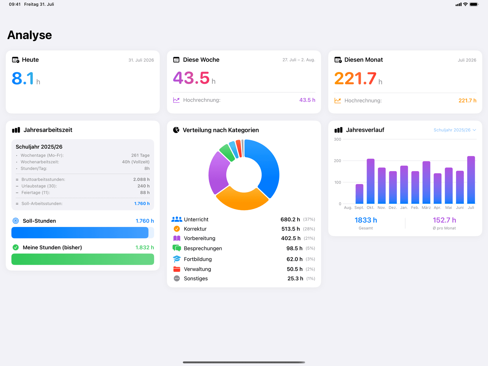
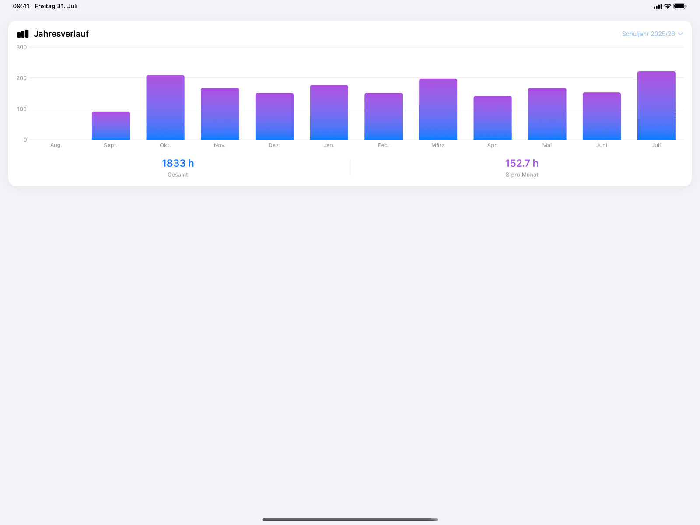
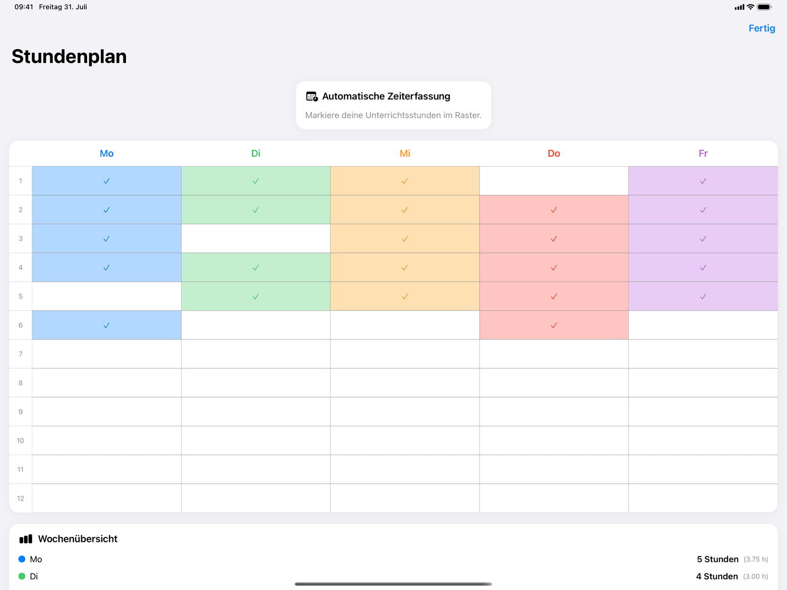
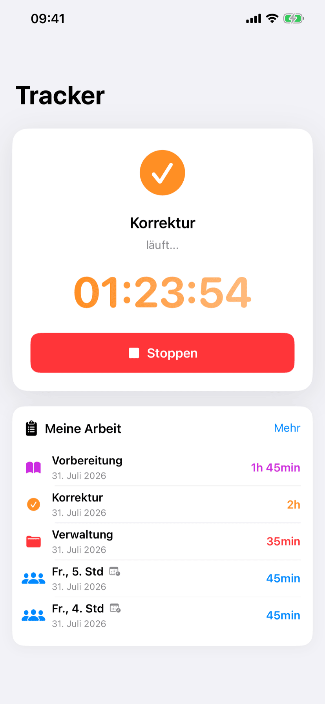
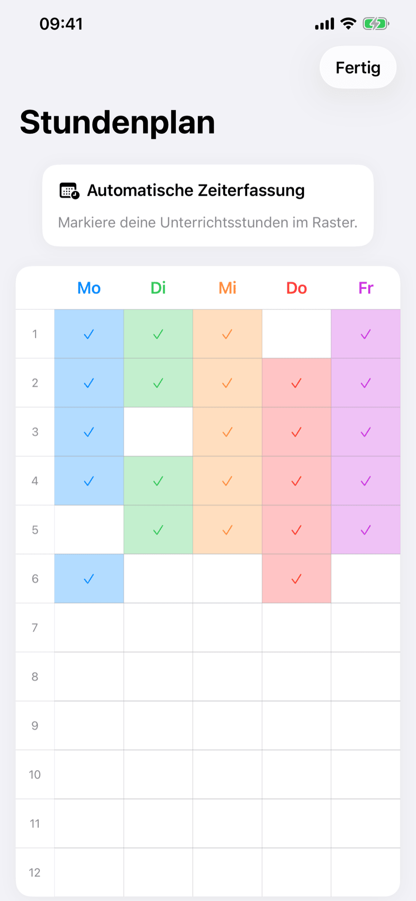
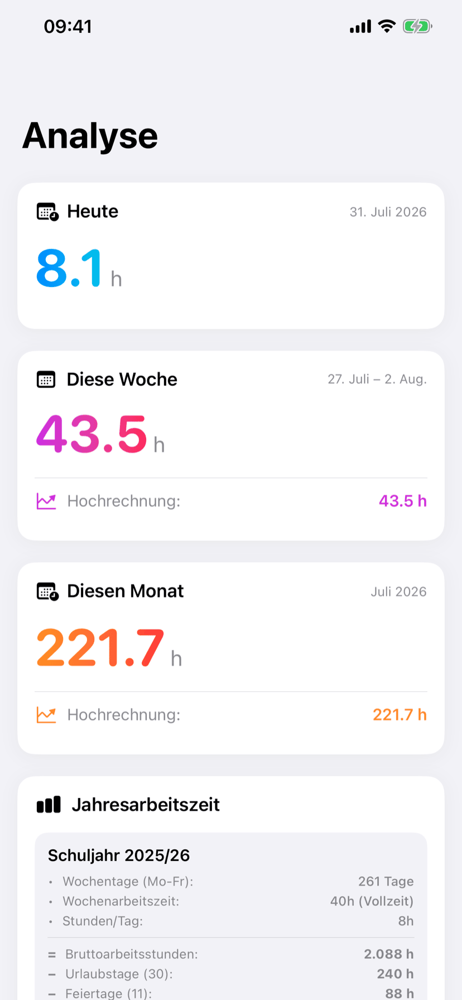
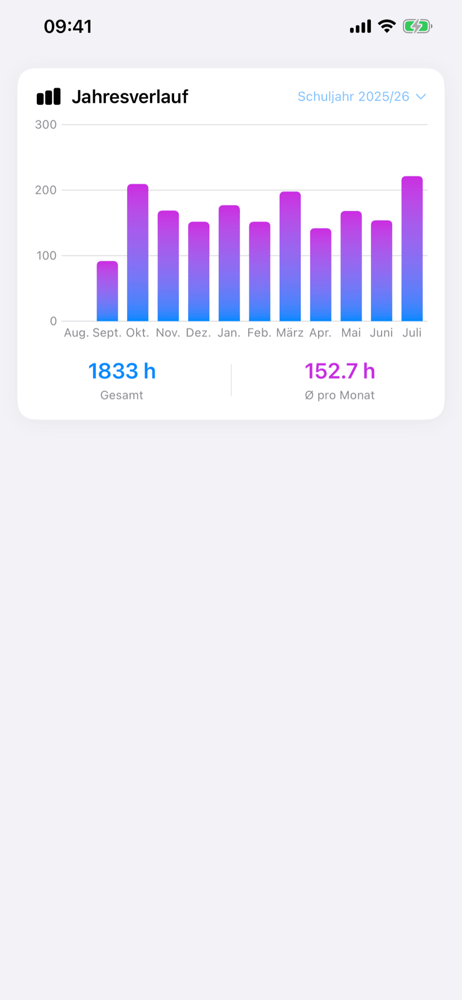
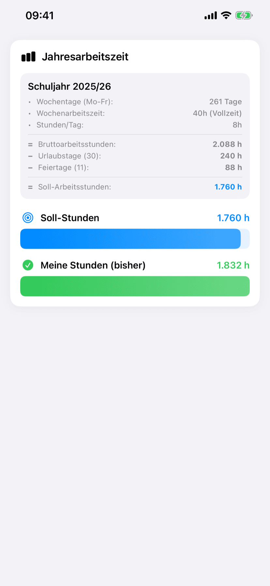
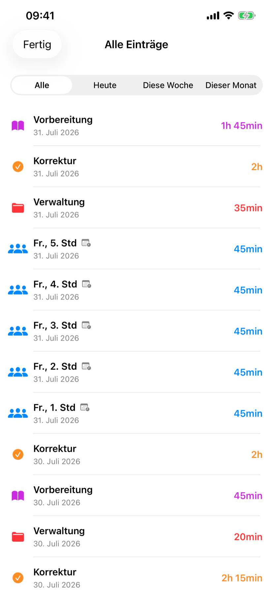
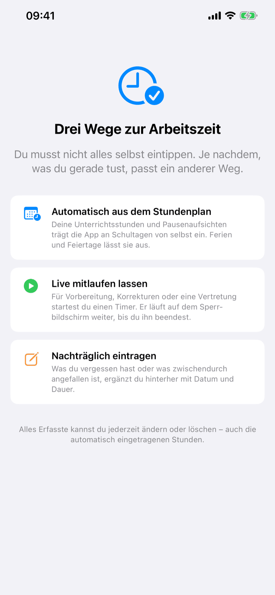

Auch auf dem iPad
Auf dem Gerät, das gerade dalag
Am Schreibtisch das iPad, in der Schule das iPhone. Beide zeigen dasselbe — auch den laufenden Timer.



Zeiterfassung für Lehrkräfte. Deine Unterrichtsstunden erfasst die App von selbst aus dem Stundenplan — den Rest legst du daneben und siehst am Ende des Schuljahres, wie viel es wirklich war.
Warum jetzt
Erst hat der Europäische Gerichtshof entschieden, dann das Bundesarbeitsgericht — und inzwischen sind die ersten Länder dabei, die Arbeitszeit ihrer Lehrkräfte tatsächlich zu messen. Wer seine eigenen Zahlen kennt, muss nicht darauf warten.
Der Europäische Gerichtshof verpflichtet die Mitgliedstaaten, ein objektives und verlässliches System zur Messung der täglich geleisteten Arbeitszeit einzuführen. Eine Frist nennt das Urteil nicht.
Ein Grundsatzbeschluss überträgt die Pflicht zur Arbeitszeiterfassung auf das deutsche Recht. Damit erreicht die Debatte auch die Schulen — bislang wird dort fast nirgends erfasst.
Als erstes Bundesland startet Bremen an neun Schulen die digitale Arbeitszeiterfassung für Lehrkräfte — samt Vorbereitung, Korrekturen und Elterngesprächen. Berlin und Sachsen erheben parallel Daten.
Quellen: Arbeitszeitstudien der Kooperationsstelle Hochschulen und Gewerkschaften der Universität Göttingen für Sachsen (2022) und Berlin (2025); Bremer Pilotprojekt zur digitalen Arbeitszeiterfassung ab dem Schuljahr 2026/27.
Überschlag
Drei Schieberegler, deine eigenen Zahlen. Der Rechner stellt dein Jahres-Soll deiner eigenen Schätzung gegenüber — genau so, wie es die App später mit gemessenen Werten tut.
Ein Schuljahr · 100 % Stelle
Die Hochrechnung nimmt 40 Schulwochen und 12 Ferienwochen an. Dieselbe Formel steckt in der App — dort allerdings mit den Feiertagen deines Bundeslandes statt eines Mittelwerts.
Das ist geschätzt. Gemessen sieht es meistens anders aus.
Der Überschlag rechnet mit einer 40-Stunden-Woche, 30 Urlaubstagen und elf Feiertagen. Er ersetzt keine dienstrechtlich verbindliche Auskunft und keine Regelung deines Landes — er soll dir nur eine Größenordnung geben.
Die App
Tippe auf das Display oder die Punkte, um weiterzublättern.







Tracker
Ein Timer für alles, was nicht im Stundenplan steht — er läuft auf dem Sperrbildschirm weiter.
So kommt die Zeit hinein
Du musst nicht alles selbst eintippen. Je nachdem, was du gerade tust, passt ein anderer Weg.
01
Stundenplan einmal ins Raster tippen. Ab dann werden Unterricht und Pausenaufsichten an jedem Schultag von selbst erfasst — Ferien und Feiertage deines Bundeslandes bleiben ausgenommen.
02
Für Vorbereitung, Korrekturen oder eine Vertretung startest du einen Timer. Er läuft als Live Activity auf dem Sperrbildschirm weiter und lässt sich dort auch wieder beenden.
03
Das Elterngespräch am Abend, die Konferenz von gestern: Was du vergessen hast, ergänzt du hinterher mit Datum und Dauer. Auch automatisch Erfasstes lässt sich ändern.
Features
Erfassen ist die halbe Miete. Die andere Hälfte ist, aus den Zahlen etwas zu sehen.
Die Jahresarbeitszeit deiner Stelle, deinen erfassten Stunden gegenübergestellt. Das ist die Zahl, um die es eigentlich geht.
Drei Karten mit Hochrechnung. Du siehst schon am Mittwoch, worauf die Woche hinausläuft — nicht erst am Sonntagabend.
Ferientermine bis zum Schuljahr 2029/30 und die Feiertage deines Landes sind hinterlegt. Kein Abruf, kein Netz nötig.
Halbe Stelle, 18 von 25, Altersermäßigung: Du hinterlegst dein Deputat, und jeder Soll-Wert rechnet sich entsprechend herunter.
Einträge, Stundenplan und Einstellungen wandern über deine private iCloud. Timer auf dem iPhone gestartet? Das iPad zeigt ihn auch.
Kein Konto, keine Anmeldung, keine Analyse-Dienste. Außer der iCloud-Verbindung stellt die App überhaupt keine Netzwerkverbindung her.
Auch auf dem iPad
Am Schreibtisch das iPad, in der Schule das iPhone. Beide zeigen dasselbe — auch den laufenden Timer.



Preis
Es gibt keine Funktion, die hinter einer Bezahlschranke liegt, und keinen Punkt, an dem die App nach Geld fragt. Der Grund ist unspektakulär: Eine App, die dir zeigt, wie viel du unbezahlt arbeitest, sollte dich nicht auch noch etwas kosten.
Ratgeber
Drei Texte zum Thema — ohne App, einfach als Einordnung.
Was EuGH und Bundesarbeitsgericht entschieden haben, welches Land gerade anfängt — und was du selbst tun kannst.
Zum Ratgeber →Die Formel Schritt für Schritt: von 261 Wochentagen zu 1.760 Stunden — und wie Teilzeit hineinspielt.
Zum Ratgeber →Was die Arbeitszeitstudien tatsächlich zeigen — und warum sich Mehrarbeit im Schuldienst so schwer greifen lässt.
Zum Ratgeber →FAQ
Ja, vollständig. Keine In-App-Käufe, kein Abo, keine Pro-Version, keine Werbung. Es gibt keine Funktion, die hinter einer Bezahlschranke liegt.
Du trägst deinen Stundenplan einmal in ein Raster ein — Unterrichtsstunden und Pausenaufsichten. Ab dann werden diese Zeiten an jedem Schultag von selbst erfasst. Ferien und Feiertage deines Bundeslandes bleiben ausgenommen, weil beides in der App hinterlegt ist.
Mit einer 40-Stunden-Woche, 30 Urlaubstagen und den gesetzlichen Feiertagen deines Bundeslandes; das Schuljahr läuft vom 1. August bis zum 31. Juli. Für eine volle Stelle ergibt das rund 1.760 Stunden, bei Teilzeit skaliert der Wert mit deinem Deputat. Das ist eine Orientierung für dich, keine dienstrechtlich verbindliche Auskunft.
Ja. Du hinterlegst dein eigenes Deputat, und alle Soll-Werte — Tag, Woche, Monat, Schuljahr — werden entsprechend heruntergerechnet.
Sie bleiben auf deinem Gerät und, wenn du den Abgleich einschaltest, in deiner eigenen privaten iCloud. Es gibt kein Benutzerkonto, keine Anmeldung, keine Werbung und keine Analyse-Dienste. Außer der iCloud-Verbindung stellt die App überhaupt keine Netzwerkverbindung her — auch Ferientermine werden nicht abgerufen, sondern sind mitgeliefert.
Ja, über iCloud: Einträge, Stundenplan und Einstellungen. Startest du einen Timer auf dem einen Gerät, siehst du ihn auf dem anderen.
Für alle 16. Die Ferientermine reichen bis zum Schuljahr 2029/30, die Feiertage werden berechnet. Beides funktioniert deshalb auch im Flugmodus.
Nein. Sie ist ein persönliches Werkzeug für deine eigene Übersicht. Wo dein Land eine dienstliche Erfassung vorschreibt, gilt weiterhin deren System.
Ein Schuljahr lang mitschreiben.
Dann steht am 31. Juli eine Zahl da, über die sich reden lässt — statt eines Gefühls.
Bald im App Store